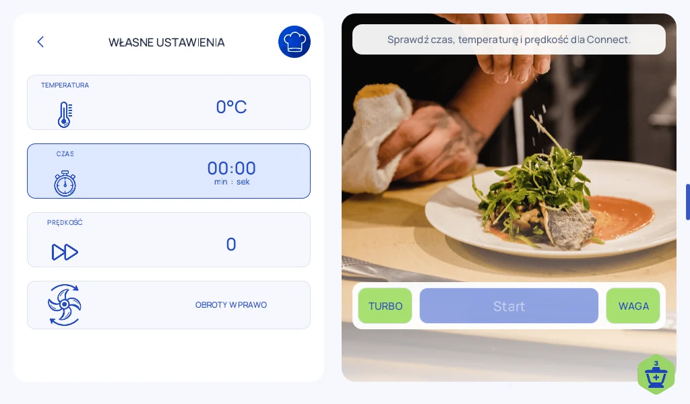
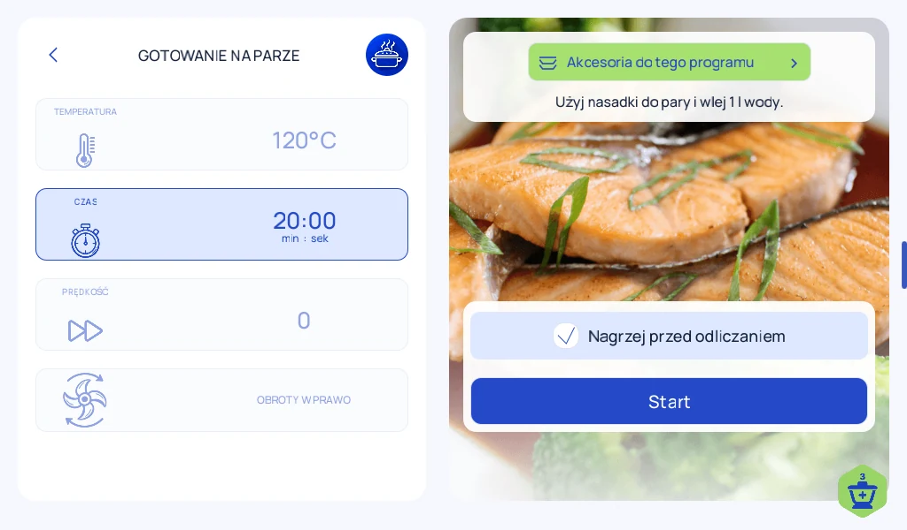
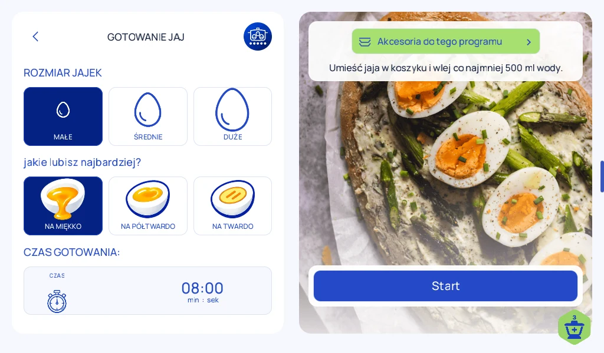
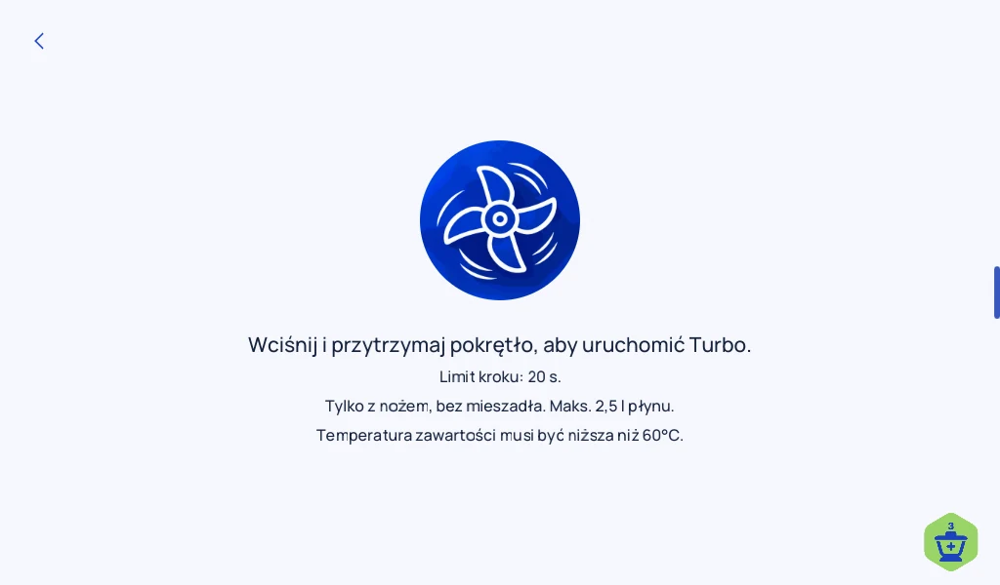

Monsieur Cuisine Connect ·
Lidlomix Pro 0.16.4. Nastawy, zdjęcia i skróty na Connect
Od wersji 0.15.3 zmieniłem sposób ustawiania robota na ekranie. Minuty i sekundy przewijam osobno, temperaturę i prędkość przesuwam w bok, a po ustawieniu wszystkiego wystarczy nacisnąć Start. Zdjęcie potrawy można rozwinąć na cały ekran, a z Wagi, Turbo i Mycia wrócić do tego samego kroku przepisu.
Temperatura i prędkość przesuwane w bok
Pierwszy edytor miał kółko inspirowane Smartem. Po próbach pogrubiłem obwódkę i poszerzyłem obszar dotyku. Przy wybieraniu konkretnej temperatury albo biegu wygodniejszy okazał się poziomy ruch palca. Wybrana wartość jest duża i widoczna pośrodku, a po bokach widać sąsiednie nastawy. Przesunięcie w lewo podnosi wartość, w prawo ją obniża. Usunąłem dodatkową listę pod kółkiem.

Czas w dwóch kolumnach i jeden Start
Dotknij pola czasu, potem przesuń osobno minuty lub sekundy w górę albo w dół. Przesunięcie jednej kolumny pozostawia drugą bez zmian. Fizyczne pokrętło reguluje aktywną kolumnę. W długich programach, takich jak fermentowanie, kolumny pokazują godziny i minuty. Zmiany w edytowalnych polach obowiązują od razu. Można przejść od czasu do temperatury i nacisnąć Start bez osobnego zatwierdzania nastaw.
W Ustawieniach własnych przy prędkości 10 ekran pokazuje limit 15 minut. Na Connect limit dotyczy biegów 7–10. Po ustawieniu grzania widać komunikat o maksymalnej prędkości 3. Ten sam limit obowiązuje przy obrotach w lewo. Przy nastawach, które na to pozwalają, edytor czasu ręcznego obsługuje zapis do 99 min i 99 sek. Programy automatyczne stosują swoje zakresy.

Czytelniejsze programy i kierunek obrotów
Jedno dotknięcie przełącza kierunek. Przy obrotach w prawo widać ostrze ze strzałkami, a przy obrotach w lewo trzepaczkę ze strzałkami. Ikony parametrów i wariantów ciasta powiększyłem mniej więcej o jedną trzecią. Ciasto twarde, miękkie i płynne mają własne grafiki. Nagłówek programu pokazuje małą ikonę z menu.
W Gotowaniu jaj powiększyłem opisy rozmiaru, stopnia ugotowania i czasu. W każdym rzędzie aktywne jest jedno niebieskie pole, pozostałe mają białe tło. W Gotowaniu na parze opcja Nagrzej przed odliczaniem ma większą powierzchnię i odstęp od Startu i Stopu. Podobny odstęp ma potwierdzenie założenia przystawki i pokrywy przy krojeniu warzyw.

Pełne zdjęcie potrawy i krótsze kafelki
W otwartym przepisie dwa razy dotknij paska ze zdjęciem, aby zobaczyć całe zdjęcie z zachowaniem proporcji. Jedno dotknięcie zamyka podgląd i wraca do przepisu. Gest działa w Katalogu offline Monsieur Cuisine i w Przepisach Dostosowanych Pro. W katalogu Pro karta rezerwuje trzy wiersze na tytuł, a pełna nazwa jest widoczna po jej otwarciu.

Turbo, Waga i Mycie jako pełne programy
Turbo i Waga są obok Startu w Ustawieniach własnych. Z pływającego menu można otworzyć również Mycie. Każdy skrót pokazuje ten sam pełny ekran co osobny program. Wróć do przepisu przywraca bieżący krok, a Wróć do programu zachowuje wcześniej ustawione parametry. Aby użyć Turbo, trzeba przytrzymać przycisk na ekranie programu.



Wszystkie wydania po 0.15.3
- 0.15.4 — pierścień fizycznego pokrętła gaśnie po uśpieniu Connecta i zapala się po wybudzeniu.
- 0.15.5 — przełączanie obrotów jednym dotknięciem i osobny wybór jednostki czasu do regulacji pokrętłem. W tej serii prac doszły też większe ikony, warianty ciasta i jaj, czytelniejsze opisy oraz większe pola opcji pary i przystawki.
- 0.15.6 — pełnoekranowy podgląd zdjęcia przepisu w obu katalogach.
- 0.15.7 — niższe kafelki w Przepisach Dostosowanych Pro, z trzema wierszami na tytuł.
- 0.15.8 — okrągłe pola czasu z wyborem jednostki i przyciskami + oraz −.
- 0.15.9 — osobny duży edytor czasu z obwódką po prawej stronie i wyborem jednostki.
- 0.16.0 — rozszerzony czas Ustawień własnych do 99 min i 99 sek, wyśrodkowane przyciski min i sek oraz obsługa tego zakresu w module Connect.
- 0.16.1 — ponad dwa razy grubsza obwódka dużego edytora i szersza strefa reagująca na krótkie przeciągnięcie.
- 0.16.2 — pionowe kolumny czasu, natychmiastowe zastosowanie nastaw, Start pod edytorem, komunikaty o limitach oraz skróty Turbo i Waga w Ustawieniach własnych.
- 0.16.3 — poziome selektory temperatury i prędkości, duże cyfry oraz usunięcie dodatkowej listy nastaw.
- 0.16.4 — pełne ekrany narzędzi ze skrótów oraz powrót do tego samego programu lub kroku przepisu.
Próby na Connect
Na urządzeniu sprawdziłem przewijanie obu kolumn czasu, limit 15:00 przy prędkości 10, komunikat przy grzaniu, poziome nastawy i powrót z narzędzi. Na testowym egzemplarzu diagnozowałem też odczyt wagi zatrzymany na 0 g. Starszy moduł Connect i odłączenie zasilania nie przywróciły reakcji na woreczek 1 kg. Przyczyna usterki pozostaje niepotwierdzona.